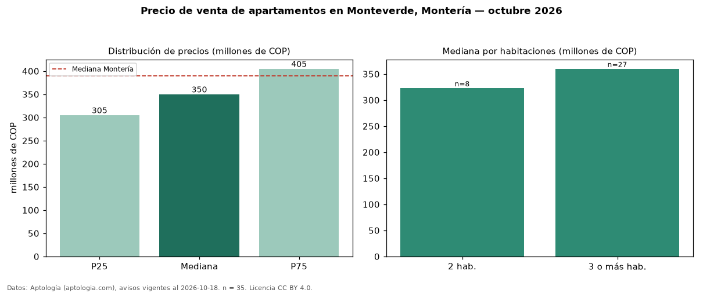

Precio de venta de apartamentos en Monteverde, Montería — octubre 2026
Con 35 avisos vigentes, el precio mediano de apartamentos en venta en Monteverde, Montería es COP 350 millones. Eso es 10 % por debajo de la mediana de Montería para apartamentos (COP 390 millones). Por metro cuadrado, la mediana es COP 3,90 millones/m² (n = 32 avisos con área), 5 % por encima de Montería (COP 3,72 millones/m²). El área mediana anunciada es 84 m². El segmento con más oferta es el de 3 o más habitaciones (27 avisos, mediana COP 360 millones); pasar de 2 habitaciones a 3 o más habitaciones cambia la mediana +11 %. El estrato más frecuente es 3 (54 % de los avisos con estrato). 85 % de los avisos con el dato declara parqueadero o cochera. La mitad central de los avisos va de COP 305 millones a COP 405 millones (razón 1,3), una dispersión baja. Datos: Aptología (aptologia.com), CC BY 4.0 — https://www.aptologia.com/venta/monteria/monteverde. Archivos: PDF, CSV con las cifras y gráfica PNG.

| Avisos únicos | 35 |
|---|---|
| Percentil 25 | COP 305.000.000 |
| Mediana | COP 350.000.000 |
| Percentil 75 | COP 405.000.000 |
| Mediana por m² | COP 3.897.487 |
Fuente: avisos vigentes de portales inmobiliarios recopilados por Aptología, deduplicados (mínimo 30 avisos únicos por celda). Precios pedidos, no cerrados. Fecha: 2026-10-18.